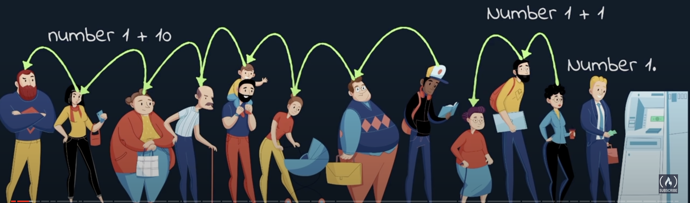
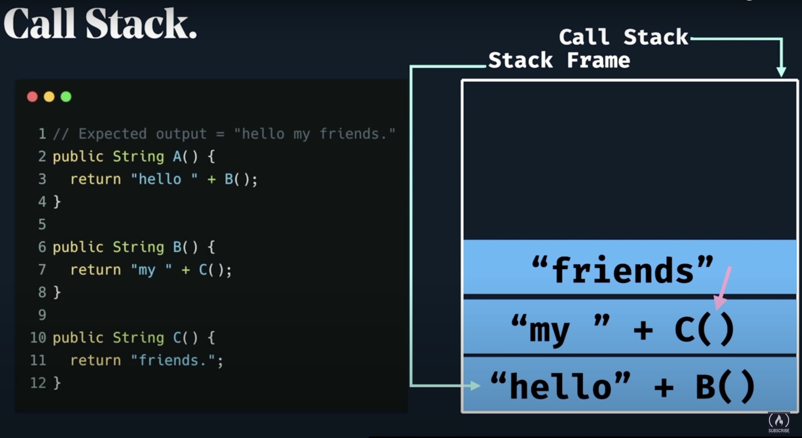
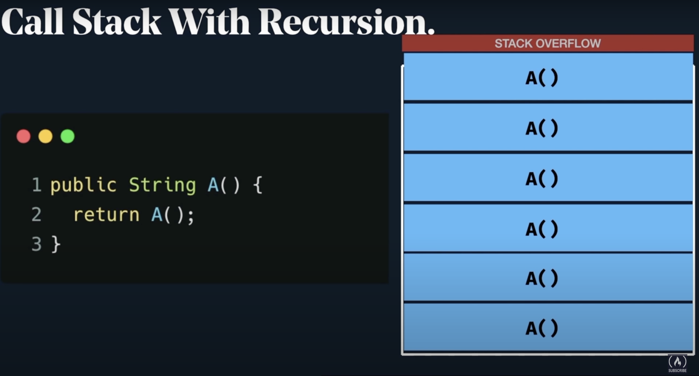
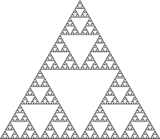

class: center, middle # Presentación Convocatoria 2022 # Estructura de Datos ## Juan Rodriguez Monti --- # Agenda 1. Introduccion 2. Que es recursion 3. Algoritmo 4. Caso de corte 5. Ventajas y desventajas 6. Un ejemplo de la vida real 7. Pila 8. Fibonacci 9. Memoization 10. Sudoku con muestra animada 11. Programacion dinamica 12. Conclusion --- # Introduccion ### Recursión o recursividad es la forma en la cual se especifica un proceso basado en su propia definición. Wikipedia. <img src="recur.jpg" alt='image' width="750" height="350" / > --- # Donde debo o puedo aplicar la recursividad ? ## Estrictamente hablando casi todos los problemas se pueden resolver de forma no recursiva. ### Sin embargo, algunas situaciones se prestan particularmente a una definición autorreferencial. Si estuviera diseñando un algoritmo para manejar un caso de este tipo mediante programación, una solución recursiva probablemente sería más limpia y concisa.  # Loop infinito? ### Todo algoritmo recursivo *debe* tener - al menos - un caso de corte que finalice su iteracion. ### El problema, a traves de la recursion se va a ir descomponiendo en problemas de menor tamaño, hasta llegar a su fin. # Ventajas? ### A modo de adelanto, la principal *desventaja* de la recursion es el consumo de recursos. ### Sin embargo, algunos problemas, funcionan bien utilizandio esta tecnica de programacion. --- # Pila de llamados  --- # Stackoverflow  --- '' Defina recursion: Ver recursion. '' #<color color="red"> Fibonacci</color> <img src=Fibo.png alt='image' width="300"/> ## En matemáticas, la sucesión o serie de Fibonacci es la siguiente sucesión infinita de números naturales: ## [0,1,1,2,3,5,8,13,21,34,55,89,144,233, ... ∞] --- ### Veamos como evoluciona la sucesión: ## <span style="color:rgb(53, 78, 101)">f{0} = 0,</span> ## <span style="color:rgb(74, 123, 167)">f{1} = 1,</span> ## <span style="color:rgb(102, 177, 244)">f{2} = f{{n-1}} + f{{n-2}} = 1</span> ## <span style="color:rgb(102, 177, 244)">f{n} = f{{n-1}} + f{{n-2}}</span> --- ### Fibonacci en JS ```terminal function fib(n) { if(n == 0) return 0; if(n == 1 || n == 2) return 1; else return fib(n-1) + fib(n-2); } ``` ### Fibonacci en Python ```terminal def fibonacci_of(n): if n in {0, 1}: return n return fibonacci_of(n - 1) + fibonacci_of(n - 2) ``` ### Fibonacci en Haskell ```terminal fib n = fibs!!n where fibs = 0 : 1 : zipWith (+) fibs (tail fibs) ``` --- # Escalabilidad <center></center> ## Tomemos como ejemplo el codigo anterior, sin optimizaciones, para resolver la serie de Fibonacci. ## Analizaremos su escalabilidad y rendimiento para valores enteros menores a **100**. --- # Tenemos un problema, como pudimos ver. --- # Ya se!, el problema es con Python que es interpretado y no define tipos ! ## Respuesta corta: NO. ## Mejor dicho; comprobemos que no usando un lenguaje muy rápido. --- # Powered by Google --- ## Vamos a implementarlo en Go ```terminal package main import "fmt" func fib(n uint) uint { if n == 0 { return 0 } else if n == 1 { return 1 } else { return fib(n-1) + fib(n-2) } } func main() { n := uint(7) fmt.Println(fib(n)) } ``` --- # También falla. --- # El problema <img src="fibonacci-naive.png" width="600" /> --- # Memoization ## En Informática, el término memoización (del inglés memoization) es una técnica de optimización que se usa principalmente para acelerar los tiempos de cálculo, almacenando los resultados de la llamada a una subrutina en una memoria intermedia o búfer y devolviendo esos mismos valores cuando se llame de nuevo a la subrutina o función con los mismos parámetros de entrada. --- ## Solucion recursiva eficiente ```terminal import functools @functools.lru_cache(maxsize=None) def fib(num): if num < 2: return num else: return fib(num-1) + fib(num-2) l = [fib(n) for n in range(1000)] for item in l: print(item) ``` --- # It works! --- # Programación dinámica ## En informática, la programación dinámica es un método para reducir el tiempo de ejecución de un algoritmo mediante la utilización de subproblemas superpuestos y subestructuras óptimas. <img src="sudoku.png" width="300" /> --- # Otra solución usando Python ``` memo = [] for i in range(20): memo.append(-1) def fib(n): if n == 0: return 0 if n == 1: return 1 if memo[n] != -1: return memo[n] memo[n] = fib(n-1) + fib(n-2) return memo[n] ``` --- # Conclusión ### Tanto los programas recursivos como los iterativos tienen el mismo poder de resolución de problemas. El programa recursivo tiene mayores requisitos de espacio que el programa iterativo ya que todas las funciones permanecerán en la pila hasta que se alcance el caso base. También tiene mayores requisitos de tiempo debido a las llamadas a funciones y la sobrecarga de retorno. ### Por otro lado, la recursión proporciona una forma limpia y sencilla de escribir código. Algunos problemas son inherentemente recursivos como recorridos de árboles, Torre de Hanoi, subdirectorios, Transformers y parsers. Para tales problemas, se prefiere escribir código recursivo. ### Se trata de una forma de resolver algoritmos muy interesante, que debe ser aprendida y utilizada adecuadamente. --- ## Muchas gracias. ### rmontijuan@gmail.com